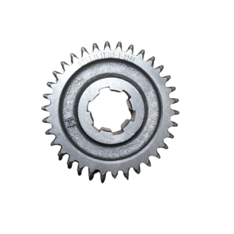
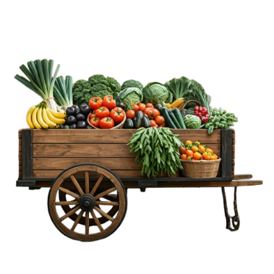
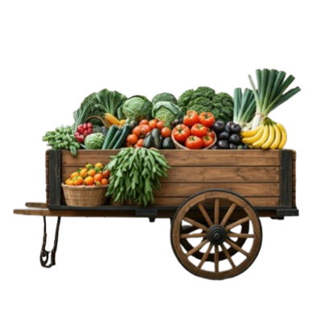

Освіта та Написання книг
У цей період в Русі-Україні активно розвивалася освіта та книгописання. Відомий Печерський монастир у Києві був важливим освітнім центром, де вивчалися релігійні та світські науки. Монастирські школи готували священиків та інших духовних осіб.

Архітектура
Архітектура того часу характеризується будівництвом кам'яних церков та монастирів. Найвідомішими пам'ятками архітектури є Софійський собор у Києві, який був зведений у 1037 році. Це один із найбільших та найважливіших храмів того часу, що відображає високий рівень мистецтва та архітектурної майстерності.
Музика
Музика в Русі-Україні відігравала важливу роль в культурному житті. Виконувалися духовні піснеспіви, які супроводжували церковні служби, а також світські пісні та інструментальна музика на святах та урочистостях. Відомі інструменти того часу включали гуслі, сопілки та труби.


Ремесла
Ремесла були надзвичайно важливі для економічного та культурного розвитку Русі-України. Майстри виготовляли знаряддя праці, прикраси, зброю, посуд та інші побутові предмети. Художнє ремесло, зокрема, різьблення по дереву, кераміка та металеві вироби, досягло високого рівня майстерності.
Thank you for your attention!
FireCatGames